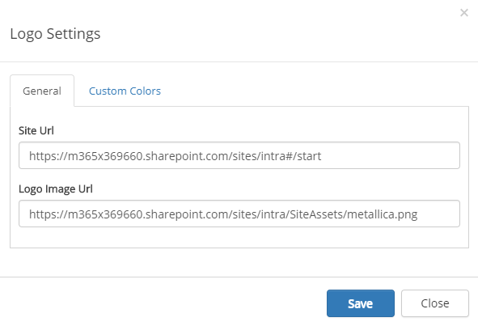
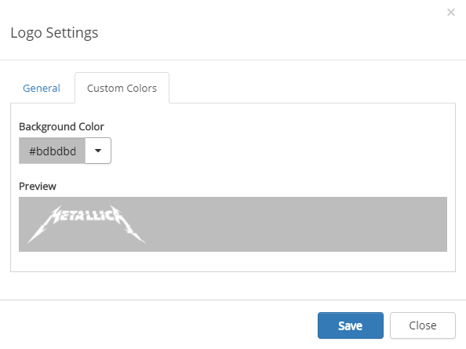

Logo
The Logo control makes it possible for the end user to go back to the start page of the portal. The logo settings are master page scoped. All sites using this master page will inherit the settings. The logo is shown across all Sharepoint sites in Omnia.

To change the settings for the control, activate the edit switch and click the settings gear.
This will open the settings dialog.

- Site Url: Defines where to go when the user clicks on the logo image.
- Logo Image Url: Url to the logo image. Make sure all users that should be able to access to portal have read access to the image.
- Custom colors: You should primarily set colors through Theme colors in Omnia Admin (System/Settings/Default colors). If you still would like custom colors for the control, you can set color of the header area that spans the logo and search box on this tab.
